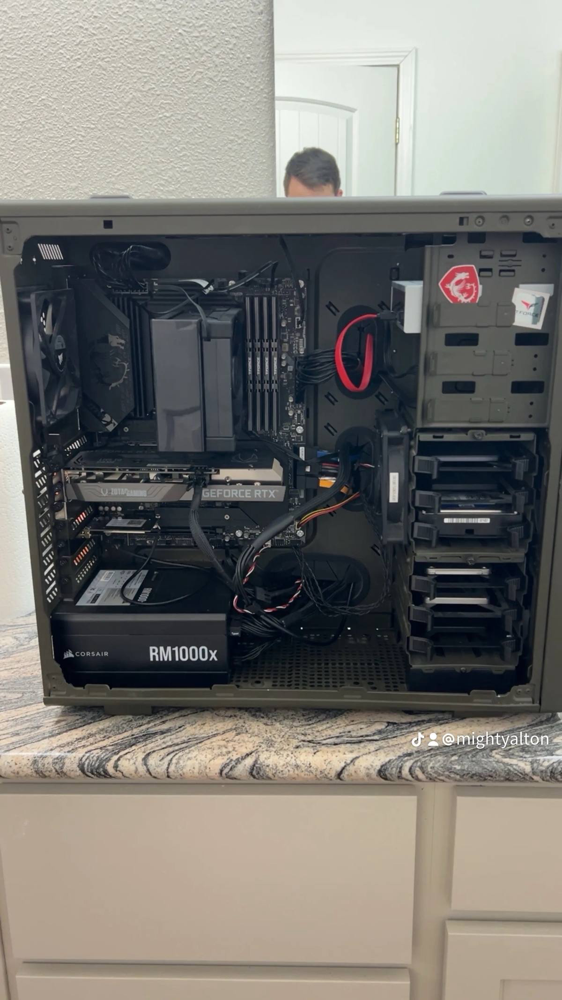

Resume
Contact
(509) 859-1462
altonwhitev@gmail.com
 LinkedIn Profile
LinkedIn Profile
Education
Bachelor of Science – Computer Information Technology
Brigham Young University - Idaho, Jan 2024 – Jul 2025 (expected)
Relevant Coursework: Database Admin, Cloud, Data Warehousing, Cybersecurity, SQL, Python, C#
Associate of Science – Computer Network Engineering & Cybersecurity
Pierce College, Dec 2023
Relevant Coursework: Windows Server, Cisco (CCNA), UNIX, PowerShell, Technical Writing
Professional Experience
Caretaker – Altitude Supported Living (Jul 2024 – Present)
Cared for special needs college-aged clients in chaotic environments, ensuring safety and communication.
Teaching Assistant – BYU-I Cybersecurity (Apr – Jul 2024)
Helped students apply cybersecurity concepts and labs from TryHackMe.com.
IT Support Technician Intern – AMS Technology (Feb – Apr 2023)
Conducted secure data destruction and hardware setup for compliance and security.
Additional Sections You Can Add
🎓 Certifications
🛠️ Technical Skills
📁 Notable Projects
🏅 Awards & Honors
🌐 Languages or Volunteer Experience
I have built 3 personal computers over the last 7 years
My current build is a Intel I9 11900K with 128GB of RAM and a 3050ti GPU
My first build was a dell 3070 that I instaklled a 1080ti geforce and 32 gb of RAM
My second build was a intel I5 10600 with 64GB of RAM and 1080ti GPU from my first build